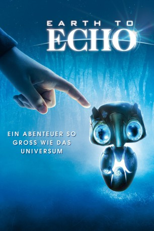

#3472 Earth to Echo - Ein Abenteuer so groß wie das Universum
Alternativ: Earth to Echo
 
 IMDB-Wertung: 5.8 / 10
IMDB-Wertung: 5.8 / 10  Metascore: 0
Metascore: 0 
Alex, Tuck und Munch sind dicke Kumpel und immer auf der Suche nach Abenteuern. Als in der Nachbarschaft mal wieder Bauarbeiten beginnen, erhalten die drei Jungs plötzlich ominöse Botschaften auf ihre Handys. Sie können diese weder lesen noch herausfinden, wer sie ihnen geschickt hat. Doch die Freunde sind sich sicher, dass es sich um etwas Wichtiges handeln muss. Nachdem ihre Eltern nichts von den vermeintlichen Hirngespinsten ihrer Söhne wissen wollen, begeben sich die drei allein auf die Suche nach Antworten. Bald finden sie eines Nachts einen geheimnisvollen Gegenstand, der auf den ersten Blick aussieht wie ein großer Stein – oder ist es etwa ein Lebewesen? Denn plötzlich scheint sich etwas im Inneren zu bewegen und ein blaues Licht flammt auf...
Jahr: 2014
Dauer: 91 Minuten
FSK: 6
Land: USA Studio: Relativity MediaTonspuren: DTS - ,
Untertitel: Deutsch,
Auflösung: 1080p (1920x1040) Größe: 7331 MB
Genre: Sci-Fi, Abenteuer, Familie
Regisseur: Dave Green
Drehbuch: Murray Salem
Soundtrack:
Darsteller:
- Teo Halm als Alex
- Astro als Tuck
- Reese Hartwig als Munch
- Ella Wahlestedt als Emma
 Jason Gray-Stanford als Dr. Lawrence Madsen, Construction Worker
Jason Gray-Stanford als Dr. Lawrence Madsen, Construction Worker Algee Smith als Marcus Simms
Algee Smith als Marcus Simms- Cassius M. Willis als Calvin Simms
- Sonya Leslie als Theresa Simms
 Kerry O'Malley als Janice Douglas
Kerry O'Malley als Janice Douglas- Virginia Louise Smith als Betty Barrett
 Peter Mackenzie als James Hastings
Peter Mackenzie als James Hastings Valerie Wildman als Christina Hastings
Valerie Wildman als Christina Hastings- Roger Hewlett als Construction Worker #2
 Mary Pat Gleason als Dusty - Mullet Lady at Bar
Mary Pat Gleason als Dusty - Mullet Lady at Bar- Marilyn Giacomazzi als Bar Patron #2
 Chris Wylde als Security Guard
Chris Wylde als Security Guard- Brooke Dillman als Diner Waitress
 Myk Watford als Blake Douglas
Myk Watford als Blake Douglas Tiffany Espensen als Charlie - School Friend #1
Tiffany Espensen als Charlie - School Friend #1 Israel Broussard als Cameron - Kid that Pushes Tuck
Israel Broussard als Cameron - Kid that Pushes Tuck- Drake Kemper als Mookie
 Sara Arrington als Munch's Mother's Friend
Sara Arrington als Munch's Mother's Friend Arthur Darbinyan als Pawn Shop Owner
Arthur Darbinyan als Pawn Shop Owner- Michael Lee Merrins als Truck Driver
- Sean Carroll als Podcast Voice
 Cici Leah Campbell als Neighbor Freaked Out By The UFO , uncredited
Cici Leah Campbell als Neighbor Freaked Out By The UFO , uncredited- Christian Elizondo als Joey , uncredited
- Samantha Elizondo als Student , uncredited
- Frank Lloyd als Bar Patron #3
Datei: X:\2014(A-F)\Earth to Echo - Ein Abenteuer so groß wie das Universum (2014, FSK6, 1920x1040).mkv seit 12.04.2016
Festplatte: HD 2013(I-Z)-2014(A-Z)
 Es gibt insgesamt 119 Filme in der Gruppe '2014(A-F)'
Es gibt insgesamt 119 Filme in der Gruppe '2014(A-F)'